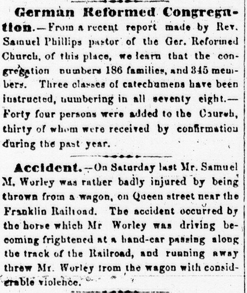
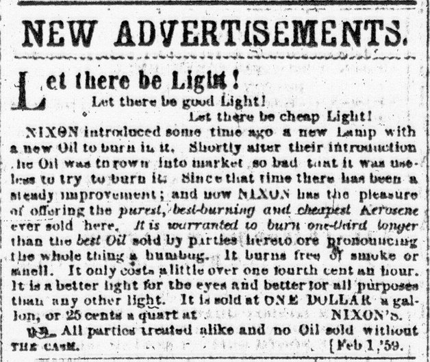

Columns 1-3: These columns, and sometimes extending into columns 4-5, carried coverage of "Local News."  Accounts of local events, political meetings, activities of local notables or local businesses, marriage and death announcements, and the like might appear here. Curiously, the last column of local news often reads like advertisements for local businesses. Though printed in the typeface and style of a news story, the content of the items serves no purpose other than to urge readers to frequent certain local businesses, such as the "article" on February 1 recommending shopping at Miller and Henshey's drug store. State news items might also appear in the local news section. Occasionally, as on February 1, after the local news section but before the ads beginning in column 4, international news items might be printed, though these were generally in a smaller typeface than the local information.
 Columns 4-6: Normally, these columns were filled with "New Advertisements." Here, ads announced dated happenings--new stock received from national suppliers now available in local stores, upcoming land sales, public auctions, the results of court cases. These inserts were not exclusively placed by Franklin County advertisers, but could come from retailers elsewhere in the state or region.